복장은 일반 업무 구역의 출입을 허용합니다. 보안구역은 별도이며, 경비 앞에서 오래 머무르면 신원 확인을 받습니다. 업무 공간에는 실제 조명을 보충하고, 소등 때 화면과 발견 판정이 함께 어두워지도록 했습니다.
같은 지도 위치의 실제 브라우저 화면입니다. 소등 화면은 해당 건물의 실내등을 끈 상태입니다.
게임 실행 · 발견·복장·저장 검사 · 회귀 검사 기록
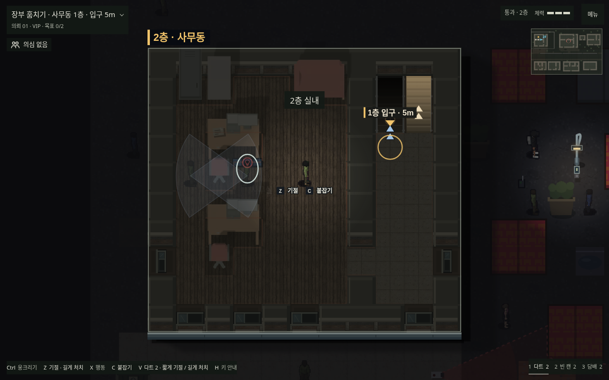
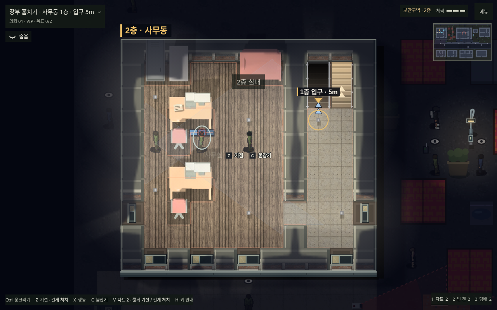
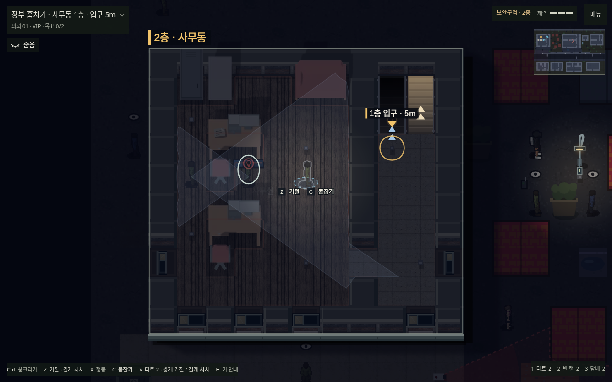
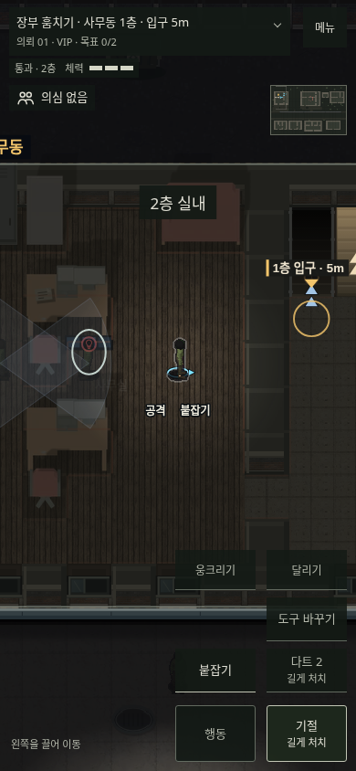
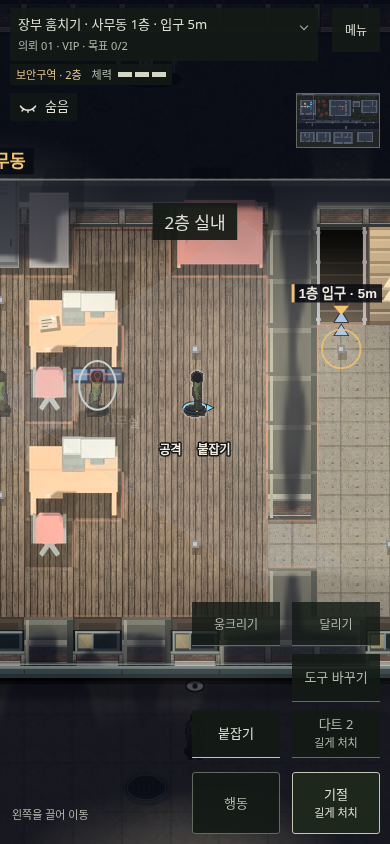
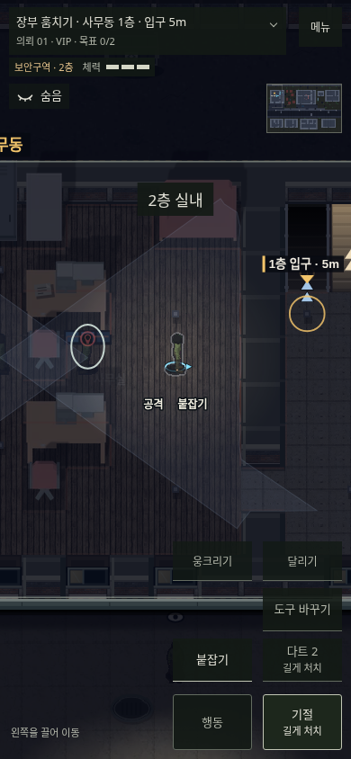
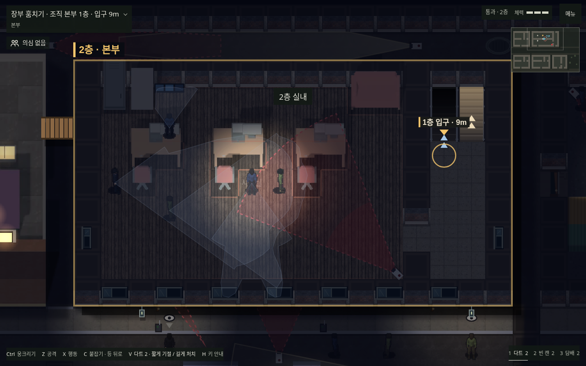
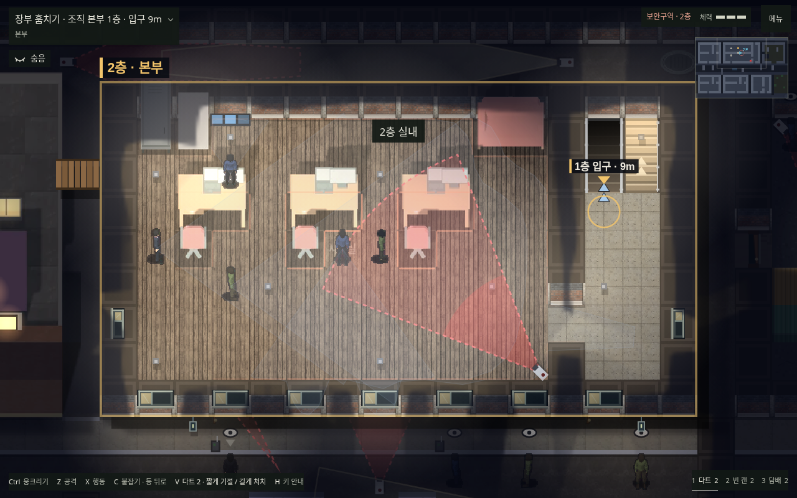
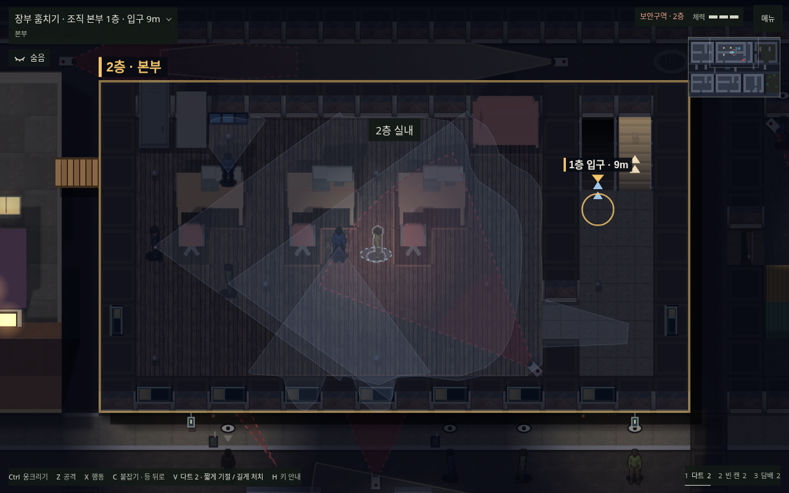
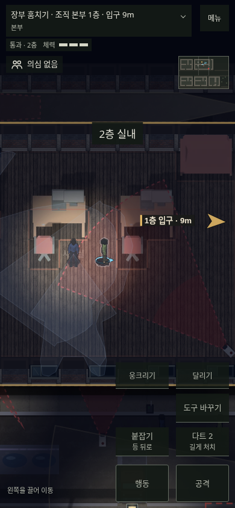
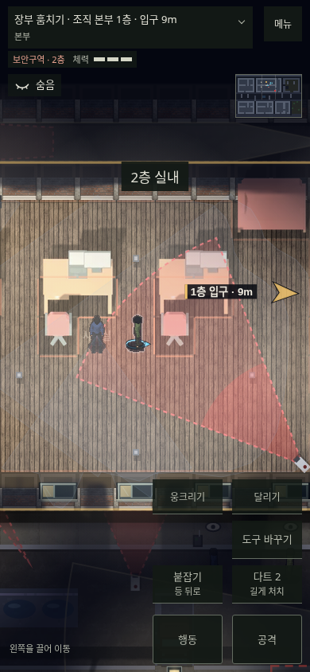
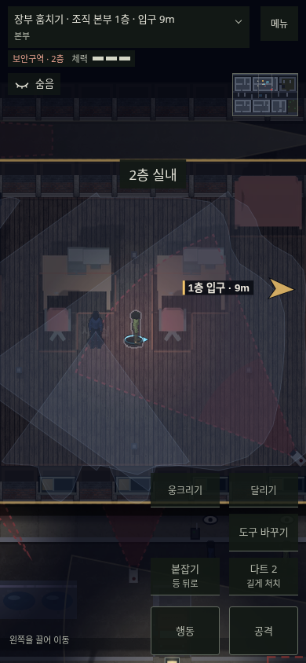